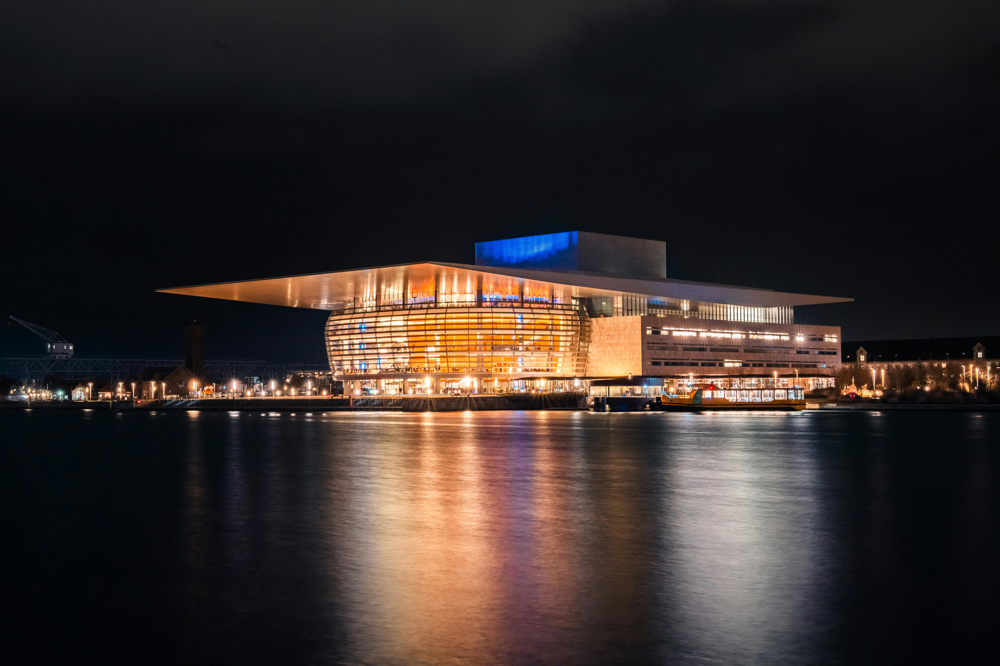
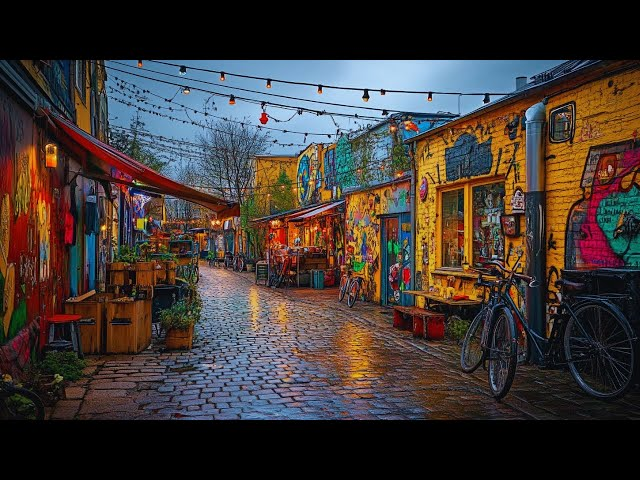
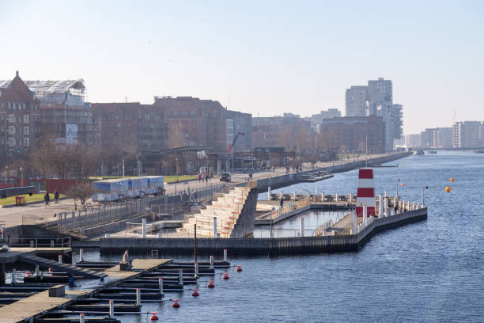

Et arkitektonisk og internationalt mesterværk på Holmen, doneret af Mærsk-fonden, med et spektakulært tag, der svæver ud mod vandet. Bygningen er perfekt på linje med Amalienborg og Marmorkirken på den anden side af havnen, hvilket skaber en smuk historisk akse gennem byen. Hvis du kigger op under det enorme udhæng om aftenen, lyser facaden op i et varmt, gyldent lys, der genspejler sig smukt i bølgerne.

Den verdenskendte fristad midt i København, som byder på alternativ livsstil, hjemmebyggede huse og en helt særlig, kreativ atmosfære. Dette bilfrie og selvstyrende område blev grundlagt af hippier i 1971 på et forladt militærområde og er i dag en af Danmarks største turistattraktioner. Husk at respektere de lokales fotoregler omkring Pusher Street, og tag i stedet kameraet frem ved de smukke, kreative huse langs søbredden.

Københavnernes foretrukne samlingspunkt om sommeren, kendt for sit livlige havnebad og den afslappede stemning langs kajen. Det prisbelønnede havnebad, designet af stjernearkitekten Bjarke Ingels, gjorde det muligt for københavnerne at svømme i rent havnevand midt i en storby. Området er det perfekte sted at holde en pause på cykelturen, købe en kold forfriskning og sidde på græsplænen og kigge på bådene.